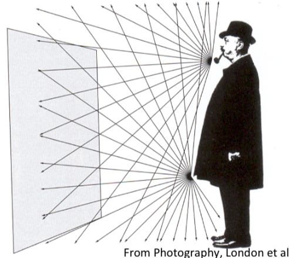
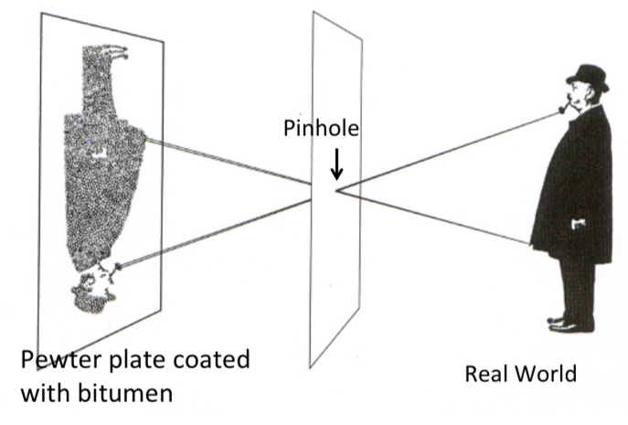
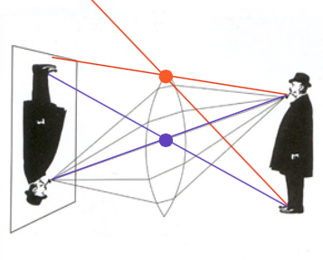
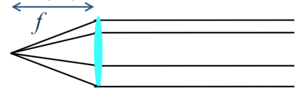
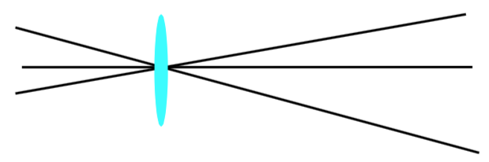
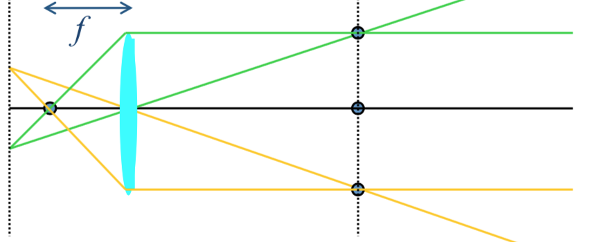
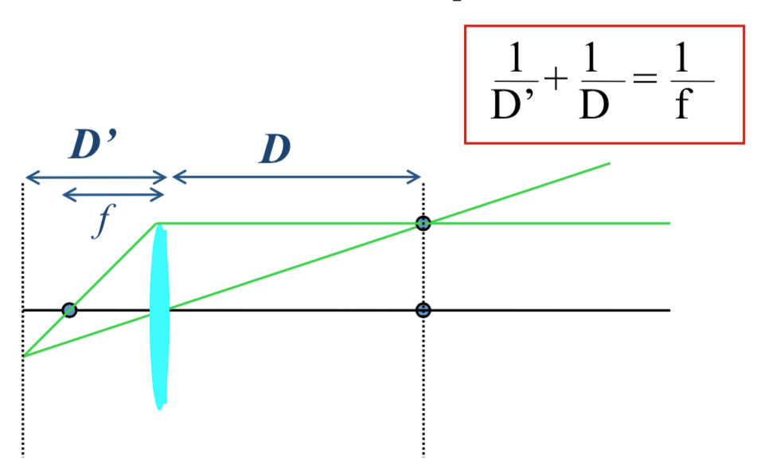
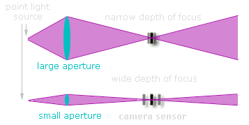

Scientific progress goes 'boink'
Ph.D. Candidate
Princeton University
Department of Computer Science
A dark box with a hole in one side. Light from an external scene goes through the hole and projects on the surface opposite the hole (or some kind of sensor, in the case of a camera). Color and perspective are preserved, but the image is rotated 180 degrees. A pinhole camera is a camera obscura that does not use a lens to focus light.
Why do we need a hole? Asked a different way, why don’t we see reflections of a scene on arbitrary pieces of paper? Without a hole, light from many directions hit the recording surface or sensor at a given point. It is not possible to record the light coming from only the area of the scene we want to record at that point on the sensor. In other words, a hole gives us an approximately one-to-one mapping of rays from points in the scene to points on the sensor.

The pinhole camera only allows rays from one point in the scene to strike each point of the paper.

The geometry and mathematics of a pinhole camera are described here.
From class notes: In optics, an aperture is a hole or opening through which light travels. The aperture determines the cone angle of a bundle of rays that come to a focus in the image plane.
If the aperture is small, we need to expose the sensor for a long time to collect enough light (i.e., long exposure time). However, we get a high fidelity image. There are very few rays from the external scene that hit each part of the sensor.
On the other hand, if the aperture is very big, we don’t need to expose the sensor for as long, but our image is blurry. Light from too many directions hit each part of the sensor.
If the aperture is extremely small, we see a blurry image. This is because of the wave nature of light. Light diffracts through a pinhole and the effect increases as the pinhole’s size becomes smaller.
In order to gather more light while still maintaining a focused image, we use a lens and rely on its ability to bend light. If we replace a large aperture with a lens, we still let in a lot of light. The lens shifts the extra rays that would have blurred our image. This refraction lets us take advantage of the extra light.

An ideal thin lens refracts, or bends, all rays perpendicular to the surface of the lens to a single point on the other side at distance $f$ (focal length).

The idea thin lens does not alter rays going through its center, thus preserving perspective.

All rays coming from points on a plane parallel to the lens are focused onto corresponding points on another plane parallel to the lens.

The distance between the two planes to the lens and the focal length is governed by the expression

We can show this is true via geometry or representing the three rays as a system of simultaneous equations.
From Wikipedia: A pinspeck camera is the optical reverse of a pinhole camera: a small (point-like) obstruction (the speck) is placed in front of the film where the (pin) hole would be in a pinhole camera. (The dark screen is “replaced” by the transparent nothing around the speck.)
Whereas in a pinhole camera the hole allows rays of light from different parts of the scene to reach different parts of the film, the obstruction in the pinspeck camera causes the shadow of different points in the scene to fall on different points on the film. The result is a negative image.
